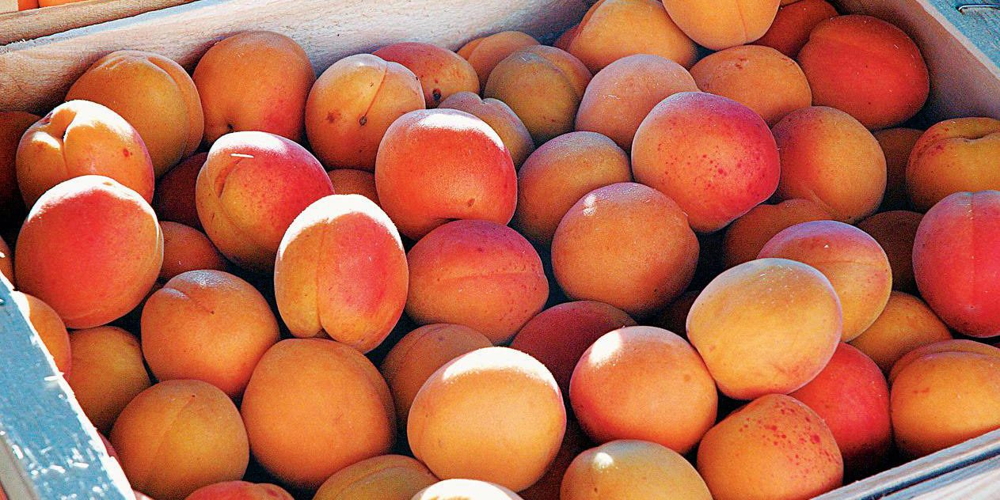

<<!DOCTYPE html>
<html lang="ru">
  <head>
    <meta charset="utf-8">
    <title>the dried apricots</title>
  </head>
  <body>
    <header>
        <ul class="menu-main">
            <li><a href="" class="current">apricots</a></li>
            <li><a href="">about us</a></li>
            <li><a href="">contacts</a></li>
          </ul>
    <style>
.menu-main {
  list-style: none;
  margin: 40px 0 5px;
  padding: 25px 0 5px;
  text-align: center;
  background: white;
}
.menu-main li {display: inline-block;}
.menu-main li:after {
  content: "|";
  color: #606060;
  display: inline-block;
  vertical-align:top;
}
.menu-main li:last-child:after {content: none;}
.menu-main a {
  text-decoration: none;
  font-family: 'Ubuntu Condensed', sans-serif;
  letter-spacing: 2px;
  position: relative;
  padding-bottom: 20px;
  margin: 0 34px 0 30px;
  font-size: 17px;
  text-transform: uppercase;
  display: inline-block;
  transition: color .2s;
}
.menu-main a, .menu-main a:visited {color: #9d999d;}
.menu-main a.current, .menu-main a:hover{color: #feb386;}
.menu-main a:before,
.menu-main a:after {
  content: "";
  position: absolute;
  height: 4px;
  top: auto;
  right: 50%;
  bottom: -5px;
  left: 50%;
  background: #feb386;
  transition: .8s;
}
.menu-main a:hover:before, .menu-main .current:before {left: 0;}
.menu-main a:hover:after, .menu-main .current:after {right: 0;}   
@media (max-width: 550px) {
.menu-main {padding-top: 0;}
.menu-main li {display: block;}
.menu-main li:after {content: none;}
.menu-main a {
  padding: 25px 0 20px; 
  margin: 0 30px;
}
}
</style>
    </header>
    <main>
        <article>
            <div class="portfolio-wrap">
                <div class="portfolio-item">
                    <div class="portfolio-item-wrap">
                    <a href="">
                    
                    <div class="portfolio-item-inner">
                    <div class="portfolio-heading">
                <h3>some cool video</h3>
                </div>
                <ul>
                <li><a href="https://www.youtube.com/watch?v=hPiNgAtxTuE">cats</a></li>
                <li><a href="https://www.youtube.com/watch?v=k85mRPqvMbE">frog</a></li>
                <li><a href="https://www.youtube.com/watch?v=ASO_zypdnsQ">gentleman</a></li>
                <li><a href="https://www.youtube.com/watch?v=QzcvRDWgRIE">butterfly</a></li>
                </ul>
                </div>
                </a>
                </div>
                </div>
                </div>
            <style>
                {
  
}
.portfolio-wrap {
   max-width: 1120px;
   margin: 0 auto;
   display: flex;
   justify-content: center;
   flex-wrap: wrap;
}
.portfolio-item {
   padding: 10px;
}
.portfolio-item a {
   display: block;
   text-decoration: none;
   color: white;
}
.portfolio-item-wrap {
   position: relative;
   overflow: hidden;
   text-align: center;
   box-shadow: 0 0 5px rgba(0, 0, 0, .2);
   background: black;
   color: white;
}
.portfolio-item img {
   display: block;
   width: 100%;
   opacity: .75;
   transition: .5s ease-in-out;
}
.portfolio-item-inner {
   position: absolute;
   top: 45%;
   left: 7%;
   right: 7%;
   bottom: 45%;
   border: 1px solid white;
   border-width: 0 1px 1px;
   transition: .4s ease-in-out;
}
.portfolio-heading {
   overflow: hidden;
   transform: translateY(-50%);
}
.portfolio-heading h3 {
   font-family: 'Pattaya', sans-serif;
   font-weight: normal;
   display: table;
   margin: 0 auto;
   padding: 0 10px;
   position: relative;
}
.portfolio-heading h3:before, .portfolio-heading h3:after {
   content: "";
   position: absolute;
   top: 50%;
   width: 50px;
   height: 1px;
   background: white;
}
.portfolio-heading h3:before {
   left: -50px;
}
.portfolio-heading h3:after {
   right: -50px;
}
.portfolio-item-inner ul {
   position: absolute;
   top: 50%;
   width: 100%;
   transform: translateY(-50%);
   padding: 0 20px;
   opacity: 0;
   list-style: none;
   font-family: 'Raleway', sans-serif;
   transition: .4s ease-in-out;
}
.portfolio-item-inner li {
   position: relative;
   font-size: 20px;
   padding: 10px 0;
   margin-bottom: 4px;
}
.portfolio-item-inner li:after {
   content: "";
   position: absolute;
   left: 50%;
   margin-left: -2px;
   bottom: -4px;
   width: 4px;
   height: 4px;
   border-radius: 50%;
   background: white;
   box-shadow: 10px 0 0 white, -10px 0 0 white;
}
.portfolio-item-inner li:last-child:after {
   content: none;
}
.portfolio-item:hover img {
   opacity: 0.45;
   transform: scale(1.1);
}
.portfolio-item:hover .portfolio-item-inner {
   top: 7%;
   bottom: 7%;
}
.portfolio-item:hover ul {
   opacity: 1;
   transition-delay: .5s;
}
            </style>
        </article>
    </main>
  </body>
</html>